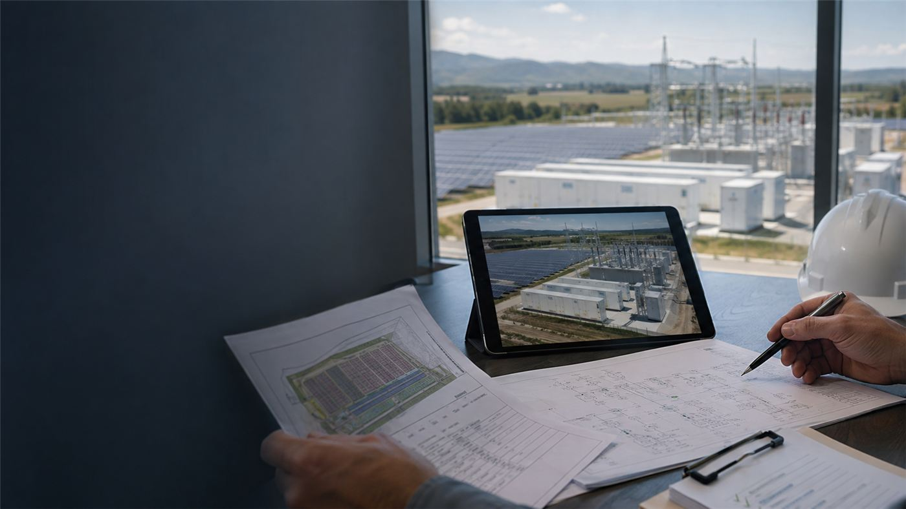

Cómo trabajamos
No entregamos únicamente documentos: organizamos decisiones, dependencias y próximos pasos. El cliente conoce qué se ha validado, qué permanece abierto, quién es responsable y qué condiciona el siguiente hito.

-
1
Alineación
Definimos objetivos, alcance, responsabilidades, información disponible y criterio de éxito.
-
2
Detección de oportunidad
Analizamos suelo, recurso, capacidad de red, concursos y contexto administrativo.
-
3
Viabilidad
Contrastamos implantación, acceso, medio ambiente, urbanismo, evacuación y calendario.
-
4
Validación con el cliente
Presentamos riesgos, alternativas y recomendación para decidir el avance.
-
5
Ingeniería y tramitación
Desarrollamos proyectos, estudios, separatas, EIA y documentación de acceso.
-
6
Seguimiento por hitos
Coordinamos requerimientos y autorizaciones hasta RtB, construcción o PES según alcance.
Resultado: decisiones trazables, documentación técnica robusta y seguimiento continuo hasta la madurez del proyecto.